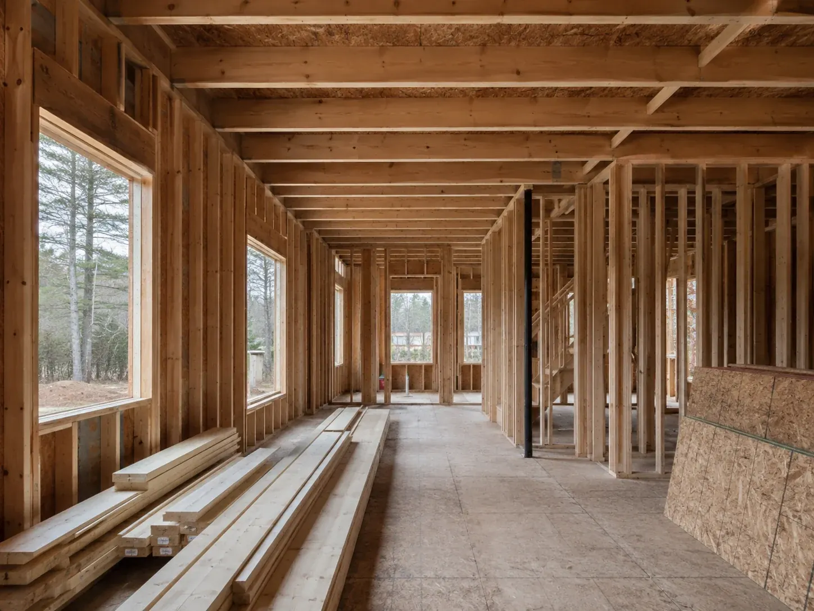
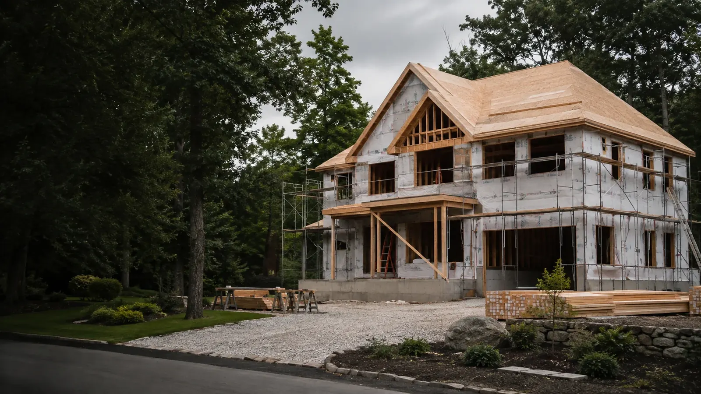
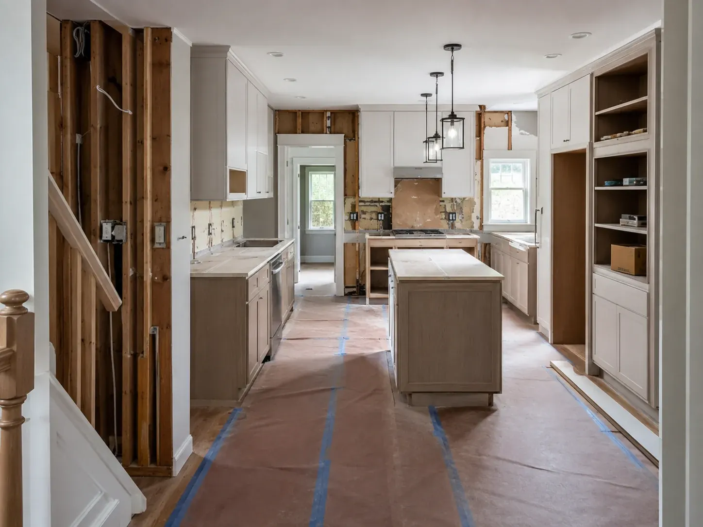

New Home Construction
If you’re building from the ground up, the project starts with a clear understanding of what you’re building and what the scope includes.
Talk About Your New Home ↗
Space Up Construction · Natick, Massachusetts
Tell us what you’re planning. We’ll talk through the scope, the property, and the next steps before work begins.
New Construction & Remodeling
Two ways to begin—each shaped by the property, the scope, and what you want to build or change.

If you’re building from the ground up, the project starts with a clear understanding of what you’re building and what the scope includes.
Talk About Your New Home ↗
For an existing home, the current condition of the property and the changes you want to make help shape the scope of work.
Talk About Your Remodel ↗Project Planning
The existing conditions and the changes you want to make help determine what the project will require. Material choices come into play as the plan takes shape.
For a remodel, the current condition of the home may affect what needs attention first.
The rooms, structural changes, and services included in the project help define the work ahead.
Selections can influence the final look and the work needed during construction.
Home Remodeling
Maybe the kitchen layout no longer works for your household. A bathroom may need a full update. An unfinished basement may have room for a completely different use.
The scope starts with what needs to change.
Update a layout that no longer works, replace worn finishes, or rework the space around how the kitchen is actually used.
Update fixtures, surfaces, storage, or layout based on what the room needs.
Finish an underused basement and turn it into a more functional part of the home.
Renovate multiple areas as part of a broader residential project.
Building From the Ground Up
As construction moves forward, each stage sets up the work that follows.
The early stages establish the structure of the home and the basis for the work ahead.
As the build progresses, the interior spaces begin to take shape.
Materials and finishes bring the rooms closer to the look and function planned for the home.
The remaining work is completed as the project reaches its final stage.
First Steps
Let us know whether you’re planning a new home or remodeling an existing one.
Share what you want to build or change and where the project stands today.
The property and the work being considered help determine what the project may require.
Once the scope is clearer, we can talk through what comes next.
Projects
From the earliest construction stage to the final result, each phase moves the home forward.
Yes. Space Up works on new home construction and residential remodeling projects.
Yes. Call or email us and tell us what you’re considering and where the project currently stands.
Yes. A project may focus on one room or include several areas of the home, depending on the scope.
The size of the project, scope of work, existing conditions, material selections, and required stages can all affect timing.
Start with the type of property, whether you’re building or remodeling, and a general idea of what you want to do.
Call (508) 474-9407 or email contact@spaceupconstruction.com.
Tell Us About Your Project
Call or email Space Up Construction and tell us what you have in mind.